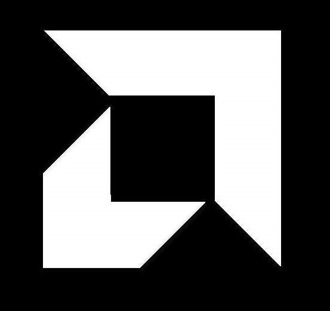
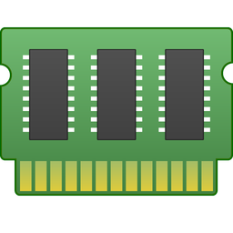
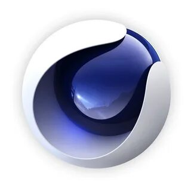

GPU
 CPU-Z
CPU-Z
Казалось бы, если на ПК установлены такие мощные утилиты, как AIDA64 и HWiNFO, больше никаких утилит мониторинга не нужно. Однако, у многих оверклокеров установлен CPU-Z, компактная утилита показывающая данные о процессоре. Преимущество ее в наглядном отображении информации о процессоре, которую можно вывести поверх других окон при разгоне. И конечно же, для создания наглядных скриншотов, показывающих состояние системы. Есть в ней и удобный встроенный бенчмарк, который стал активно использоваться "оверами" последнее время.
Скачать
Thaiphoon Burner
Разгон ОЗУ приносит все больше прироста в играх и "синтетике" в последние годы, но стал заметно сложнее, чем раньше. Теперь для оптимального разгона и подбора таймингов потребуются специальные утилиты, делающие этот утомительный процесс удобнее. Одна из них - Thaiphoon Burner, показывает подробную информацию о производителе ОЗУ, серийный номер продукта, частоту, тайминги, напряжение, емкость. Дополнительно указываются сведения о дате и регионе выпуска устройства. Thaiphoon Burner может и вносить изменения в некоторые из этих параметров, но начинающему (да и продвинутому) оверклокеру лучше этого не делать.
Скачать
ZenTimings
Ну а наглядно и удобно вывести показания таймингов и напряжений ОЗУ на экран для скриншотов позволит утилита ZenTimings
Скачать
Вишенкой на торте среди подобных утилит будет DRAM Calculator for Ryzen, калькулятор от разработчика 1usmus, для подбора таймингов ОЗУ, для систем на Ryzen, который сэкономил немало времени и нервов многим пользователям, в том числе и мне. Калькулятор учтет модель вашей ОЗУ и подберет оптимальные частоты и тайминги, учитывая напряжения. Скачать Asrock Timing Configurator(INTEL)
Для процессоров Intel можно использовать утилиту от ASRock - Timing Configurator, скачать которую можно из комплекта утилит для материнских плат ASRock. Скачать  AMD Ryzen Master
Утилита от AMD, позволяющая менять множество параметров системы - менять множитель процессора, напряжением питания процессора и памяти, регулировка напряжения чипсета, управление таймингами памяти и многое другое. Утилита может и разогнать встроенную графику Radeon Vega. Скачать Clock Tuner for Ryzen
Уникальная утилита от энтузиаста 1usmus, которая позволяет тонко настроить питание и частоты процессоров Zen 2 и Zen 3, позволяя им работать быстрее, меньше греться и потреблять при этом меньше электричества. Скачать  TestMem5
Специфика разгона ОЗУ заключается в том, что вы можете часами "гонять" на ПК обычные тесты и они не покажут ошибок. Поэтому использовать для тестирования ОЗУ тесты из AIDA64 или OCCT не стоит, лучше воспользоваться тестом, который быстро и точно выявляет нестабильный разгон. TestMem5 используется с разными пресетами сложности, но имеет не очень понятный интерфейс Скачать  Cinebench R23
Понять, какой прирост производительности получил ваш процессор после разгона поможет популярный у оверклокеров тест Cinebench R23, который позволяет уловить даже незначительный прирост. Сайт разработчика